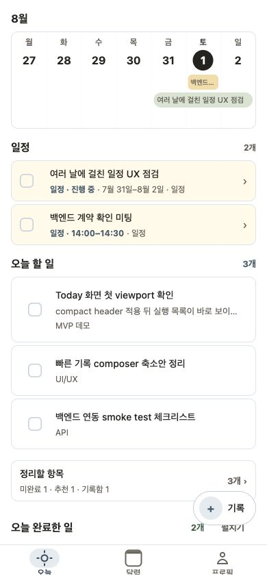
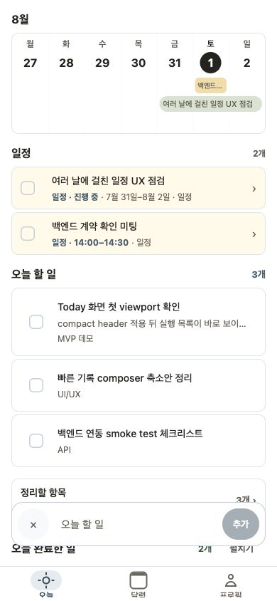
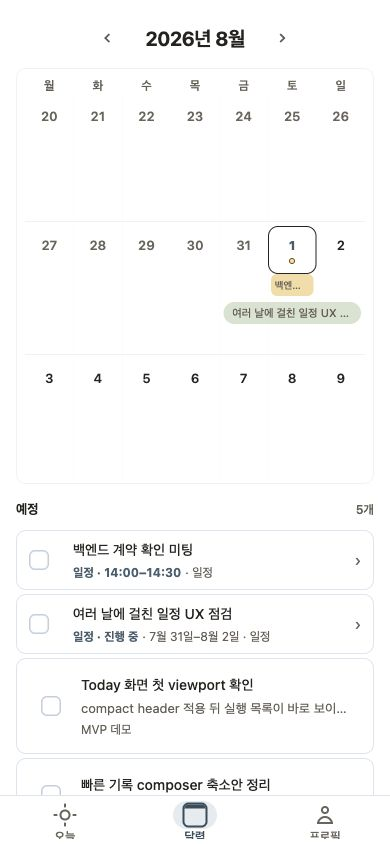
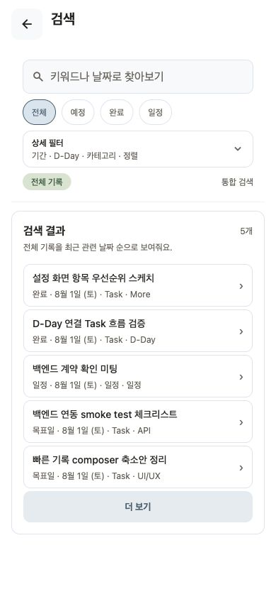
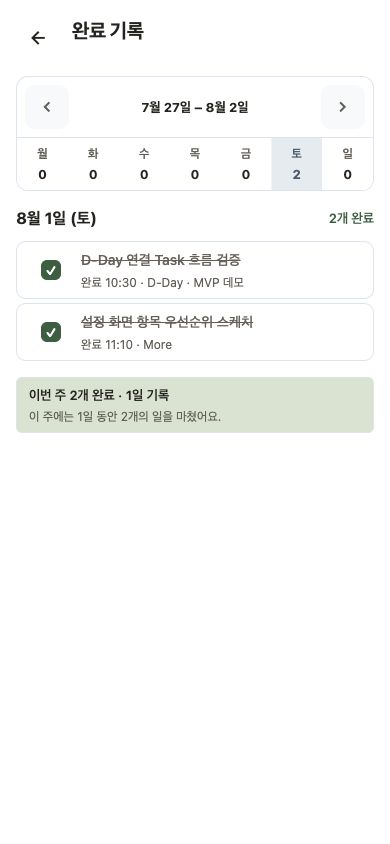

Today
오늘 할 일과 일정을 한눈에
일정은 위에, 실행할 일은 바로 아래에. 오늘 해야 할 일에 집중하세요.

일정은 위에, 실행할 일은 바로 아래에. 오늘 해야 할 일에 집중하세요.

지금 정리하지 않아도 괜찮아요. 먼저 기록하고 나중에 Today로 옮기세요.

선택한 날을 중심으로 앞뒤 일정을 훑고, 여러 날 일정은 이어지는 bar로 확인하세요.

완료 기록, 일정, Task를 키워드와 필터로 다시 찾을 수 있어요.

오늘 끝낸 일과 지난 완료 기록을 확인하고, 필요하면 다시 열 수 있어요.
